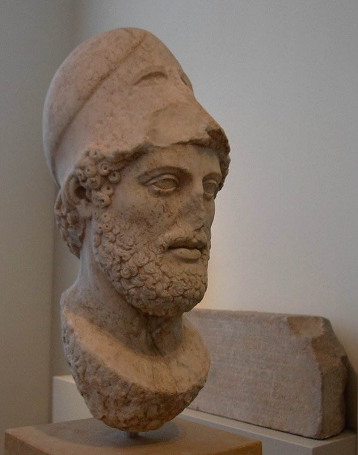

Reviewing a few terms from Lesson 1.1, plus two new ones.
- aristocracy (air-ih-STOK-ruh-see)
- a government, or ruling class, made up of a small group of noble, “well-born” families.
- democracy (dih-MOK-ruh-see)
- a government in which the people rule themselves, directly or through leaders they choose.
- direct democracy
- a system where citizens vote on laws themselves, in person, instead of choosing representatives to vote for them.
- draconian (druh-KOH-nee-un)
- describes rules or punishments that are much too harsh. The word comes from the lawgiver Draco.
- ostracism (OSS-truh-siz-um)
- a vote by the Assembly to banish a citizen from Athens for ten years, without any criminal charge, used to remove anyone gaining too much power.
- tyranny (TEER-uh-nee)
- rule by a tyrant; a type of government where one person holds power outside the city's normal system for choosing leaders.
- tyrant (TY-rant)
- in ancient Greece, a ruler who took power outside the city's normal system for choosing leaders.
Rebuilding the tribes was the special contribution of Athens' First Democrat. But it built on a longer process that was already underway. The Sage of Athens, back in 594 BC, deserves most of the credit for breaking the aristocratic families' grip on Athenian politics in the first place. His property classes opened political office to any citizen with enough wealth. It did not matter if that citizen was an aristocrat or not. By his time, plenty of commoners had grown wealthy enough to qualify. The Athenian Tyrant seized power by force, but he continued this same work instead of reversing it. He kept those property rules firmly in place. He lifted up wealthy and middle-class commoners. He steadily pushed the aristocratic families further from real power. The first democratic reformer of Athens came only after the Athenian Tyrant's family was finally driven out. His reforms had a somewhat different focus. He was not trying to break the aristocracyair-ih-STOK-ruh-seea government, or ruling class, made up of a small group of noble, “well-born” families.'s economic grip; the other two had already done most of that work. Instead, he focused on increasing the power of the Assembly itself. He also focused on expanding who could count as a citizen in the first place. With that background in place, here are the specific institutions he built. We will also look at the pieces later reformers would still need to finish.
Reviewing Lesson 1.1's Greek terms, plus new ones for the institutions below.
- Boule (BOO-lay)
- the Greek name for the Council of Five Hundred, which prepared business for the Assembly.
- Cleisthenes (KLYSE-thuh-neez)
- an Athenian reformer who created ten new tribes and gave ordinary citizens the right to speak in the Assembly.
- Draco (DRAY-koh)
- the first Athenian lawgiver to write Athens's laws down, in 621 BC.
- Ekklesia (eh-KLEE-see-uh)
- the Greek name for the Athenian Assembly, where every adult male citizen could speak and vote directly.
- Ephialtes (ee-fee-AL-teez)
- a reformer who, with Pericles, created a stipend so poorer citizens could afford to serve on the Council.
- eupatridae (yoo-PAT-rih-dye)
- the small group of noble, “well-born” families who ruled early Athens.
- pentacosiomedimni (pen-tuh-koh-see-oh-meh-DIM-nee)
- the richest of Solon's four property classes.
- Pericles (PEH-rih-kleez)
- a reformer who, with Ephialtes, helped the Assembly gain the upper hand over the Council in the 450s BC.
- Pisistratus (py-SIS-truh-tuhs)
- an Athenian nobleman who seized power by force in 546 BC but kept most of Solon's reforms in place.
- Pnyx (puh-NIKS)
- the hill where the Athenian Assembly met to debate and vote.
- seisachtheia (say-sahk-THAY-uh)
- Solon's reform that canceled crushing debts and freed debt slaves; the word means “shaking-off of burdens.”
- Solon (SOH-lon)
- an Athenian lawgiver chosen in 594 BC to rewrite the city's laws and fix its debt crisis.
- thetes (THAY-teez)
- the poorest of Solon's four property classes, owning little or no land.
- zeugetai (zoog-EH-tye)
- the middle class of Solon's four property classes, mostly farmers with a modest amount of land.
The Council of Five HundredBOO-laythe Greek name for the Council of Five Hundred, which prepared business for the Assembly. replaced the smaller Council of Four Hundred. Each year, fifty men were chosen from each of the ten new tribes to serve on this council. The choosing happened in two stages. First, each deme, or local district, held its own election to pick its candidates. In practice, this first election favored wealthier and middle-class residents. Serving on the Council took a lot of time. A man who worked for daily wages could not easily give up a year of earning a living. Only after that first election did the final choice happen by lot. This means by random chance, not by more voting. The Council prepared the agenda for the full citizen Assembly. It also watched over the city's officials and handled day-to-day business. Because the Council controlled that agenda, it actually held the real power at first, not the Assembly. This did not change right away. It took another generation for this balance to shift. In the 460s and 450s BC, two later reformers, remembered today as the Athenian Champion and Father of Athenian Democracy, created a stipend. This was a small daily payment for serving on the Council. This one change made it possible for the poorest citizensTHAY-teezthe poorest of Solon's four property classes, owning little or no land. to serve at all. They no longer had to give up a year of wages to do so. Only after that change did the Assembly truly gain the upper hand in setting its own agenda. Choosing by lot is worth pausing on, once it applied to a wide pool of citizens and not just the wealthy. The Athenians believed that rotating ordinary citizens through office by pure chance helped protect the system. It stopped a small, permanent political class from taking over. It also meant they were not always electing the richest or most persuasive speakers.
Ephialtes was an Athenian reformer active in the 460s BC, a generation after Cleisthenes. Alongside a younger ally named Pericles, Ephialtes created a small daily payment for serving on the Council of Five Hundred, a stipend that let poorer citizens, who could not otherwise give up a year's wages, finally serve. That single change let the Assembly gain the upper hand over the Council in setting its own agenda, completing a shift toward direct citizen power that Cleisthenes had begun but not finished. Ephialtes did not enjoy his victory for long: he was assassinated in 461 BC, and the exact circumstances were never fully known. Pericles carried the reforms forward without him.
No surviving portrait or sculpture of Ephialtes has been located; flagged here rather than substituting an unrelated image.

Pericles was a younger ally of Ephialtes in the 460s BC, and the two worked together on the Council reform that let poorer citizens finally afford to serve. After Ephialtes was assassinated in 461 BC, Pericles carried the reforms forward alone, and went on to dominate Athenian politics for roughly three decades. He is remembered today as the leader most associated with Athens's Golden Age: the building of the Parthenon, the flowering of drama and philosophy, and the fullest expression of direct citizen rule the ancient world ever produced. You will meet him again later in this course.
Roman-era marble bust of Pericles, Altes Museum, Berlin. (Image: Wikimedia Commons, public domain.)
The Assembly: Direct Democracy Itself
The Assemblyeh-KLEE-see-uhthe Greek name for the Athenian Assembly, where every adult male citizen could speak and vote directly. was the place where every adult male citizen could speak and vote directly. This was not some elected representative speaking for him. The citizen spoke and voted himself, on matters of war, peace, new laws, and public spending. This is what historians call direct democracydih-REKT dih-MOK-ruh-seea system where citizens vote on laws themselves, in person, instead of choosing representatives to vote for them.. The citizens are not choosing someone else to rule for them. They are ruling themselves, in person, with their own votes. The Assembly met on a hill overlooking the citypuh-NIKSthe hill where the Athenian Assembly met to debate and vote.. Thousands of Athenians would gather there to debate loudly and then vote by a simple show of hands.
New England's town meeting traces back to the 1630s, when Puritan settlers in Massachusetts and Connecticut needed a way to run their new towns without waiting for instructions from officials back in England. Voters, at first only adult male property owners, gathered in person in the meetinghouse to decide local business directly: which roads to build, how much to tax themselves, who would serve as constable or selectman. No representative decided these questions for them. Any voter could stand up, propose an idea, and vote, the same basic arrangement Athens had built two thousand years before.
The town meeting became a training ground for revolution. In the 1760s and 1770s, Boston held many of its town meetings at Faneuil Hall, and those meetings turned into some of the loudest protests against British taxes. Samuel Adams and the Sons of Liberty used them to organize resistance to the Stamp Act and the Tea Act, then spread their arguments to other towns through committees of correspondence. Faneuil Hall earned the nickname “the Cradle of Liberty” for exactly this reason. By the time the war actually began, many New England towns had already practiced direct self-government, in public, by open vote, for well over a hundred years.
That habit did not disappear once the United States became a country. Many small New England towns still hold an open town meeting every year, where any registered voter can attend, debate the budget, and vote directly on local questions, with no representative required. The same basic idea also shaped how America organizes elections on a much larger scale. A caucus, where party members gather in person at the precinct level to debate and choose candidates by a show of hands or a headcount, runs on the same principle as a town meeting: decide directly, together, in one room. Primary elections later grew out of that same push to let ordinary voters, not just party leaders, choose who runs for office.
Athens could never have imagined Boston, or a modern presidential primary. But the basic idea, that ordinary citizens can gather and rule themselves directly, crossed an ocean and outlived the empire that first tried it.
Faneuil Hall, Boston, Massachusetts. Built 1742–43; enlarged 1805. (Photo: Daderot, 2005. Image: Wikimedia Commons, CC BY-SA 3.0.)
Ostracism: A Safety Valve
A third institution, added a few years later, was ostracismOSS-truh-siz-uma vote by the Assembly to banish a citizen from Athens for ten years, without any criminal charge, used to remove anyone gaining too much power.. Once a year, the Assembly could vote to exile, or banish, any single citizen from Athens for ten full years. This was not a criminal punishment for breaking a law. Instead, it worked like a safety valve. It was a way to remove anyone who was gaining so much personal power or popularity that he threatened the democracydih-MOK-ruh-seea government in which the people rule themselves, directly or through leaders they choose. itself. No formal criminal charge was ever needed to ostracize a man. The Assembly simply needed enough votes cast against his name.
Together, these three institutions, the Council, the Assembly, and ostracism, answer one of the oldest political questions there is: who rules a city, and what stops that rule from turning back into tyrannyTEER-uh-neerule by a tyrant; a type of government where one person holds power outside the city's normal system for choosing leaders.? Athens' First Democrat gave his answer, and the Athenian Champion and Father of Athenian Democracy later completed it. Their answer was to spread power as widely as possible and to rotate it constantly. This way, no single group could ever hold power long enough to abuse it. Notice, though, what this system does not have. Athens had no independent court system in the modern sense. It had no separation of powers as we would recognize it today. It had no written bill of rights protecting individual citizens from the state. Athenian democracydih-MOK-ruh-seea government in which the people rule themselves, directly or through leaders they choose. protected liberty mainly through active participation and constant rotation of office. It did not protect liberty through fixed, structural limits placed on power itself. Later this quarter, when you reach the American Constitutional Convention, watch closely. Notice how very differently James Madison and the other framers chose to answer this same ancient question.
Athenian democracydih-MOK-ruh-seea government in which the people rule themselves, directly or through leaders they choose. protected liberty through participation and rotation, spreading power across the Council, the Assembly, and ostracism, rather than through the structural limits on power you will see in later weeks. Next week, in Rome, you will meet a very different answer to the same question: instead of rotating everyone through office, the Romans split executive power between two rival Consuls and built a Senate and Assemblies around them.